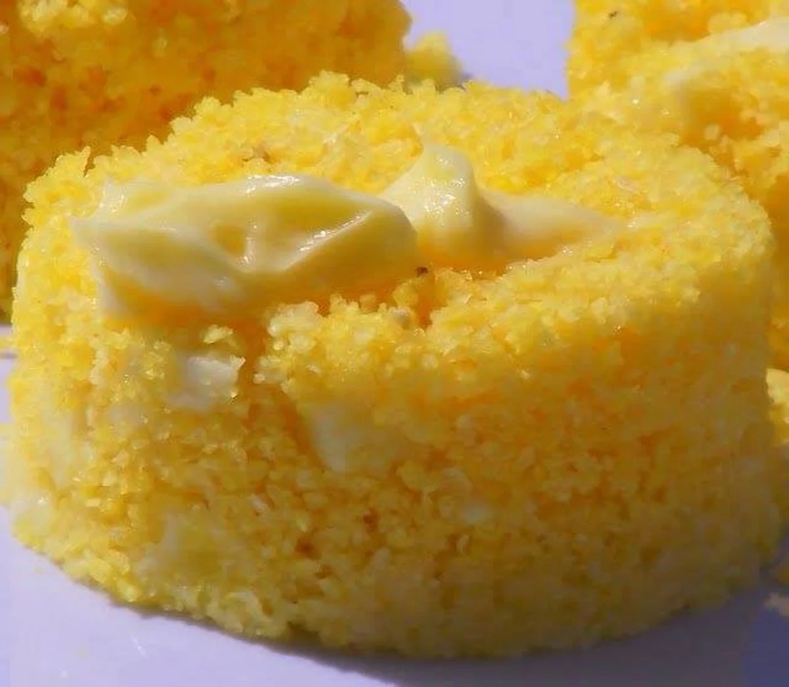

Cuscuz:
- 2 xícaras (chá) de farinha de milho
- 1 xícara (chá) de água (aproximadamente)
- 1 colher rasa (chá) de sal
Ingredientes:
- Em uma tigela, junte a farinha de milho com o sal;
- Misture bem;
- Em seguida vá adicionando a água aos poucos e vá misturando com as mãos;
- Depois cubra a tigela com um pano e deixe descansar por 20 minutos;
- Passado esse tempo, mexa novamente, para que fique bem soltinho;
- Coloque água na cuscuzeira (apenas metade do compartimento de água);
- Em seguida, coloque o ralo vaporizador da cuscuzeira e transfira a mistura para a cuscuzeira;
- Tampe e leve ao fogo médio por cerca de 15 minutos ou até que o cuscuz esteja firme;
- Desligue o fogo, retire o cuscuz da cuscuzeira e sirva com manteiga e acompanhado de um cafezinho.